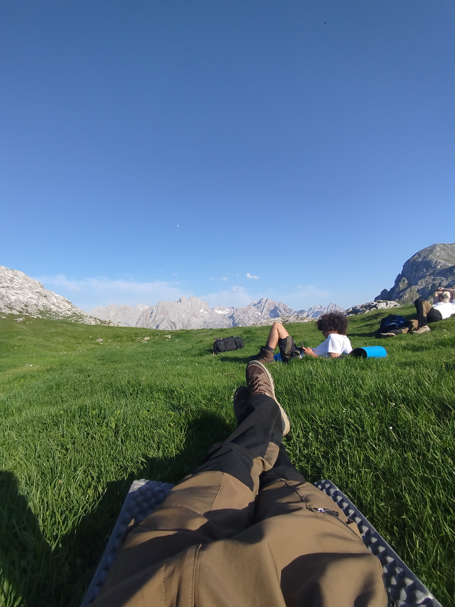
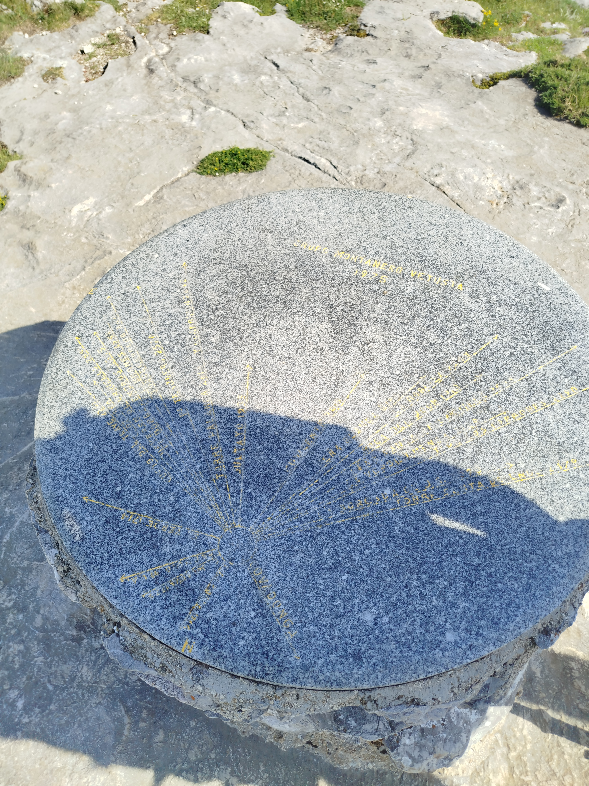
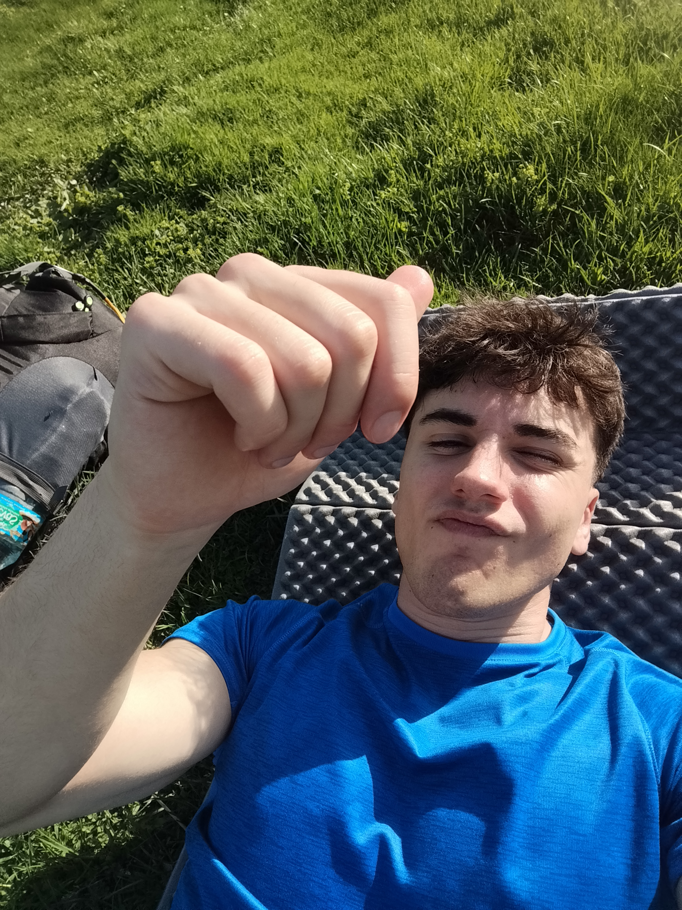
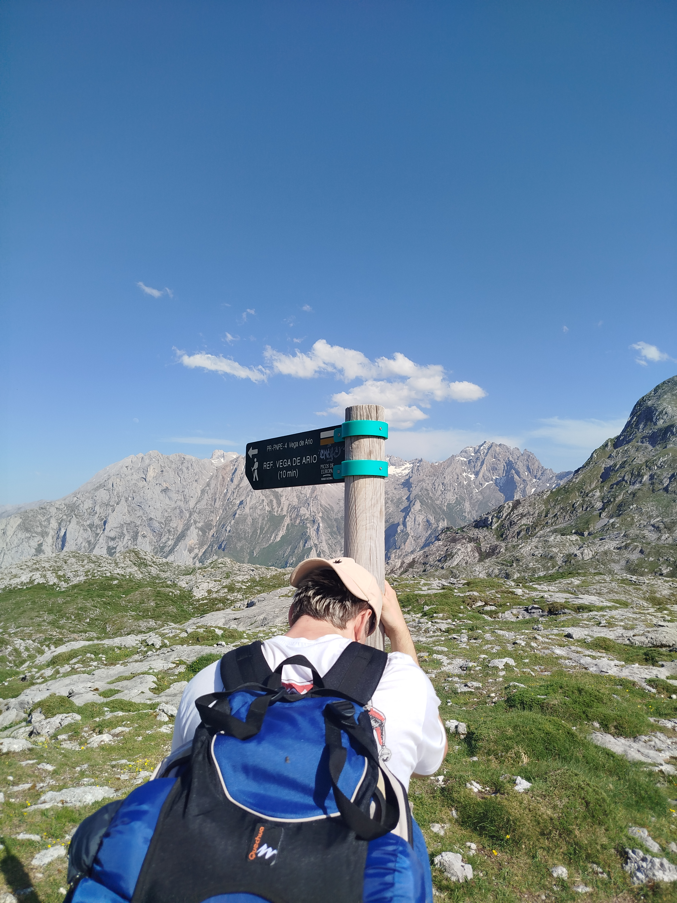
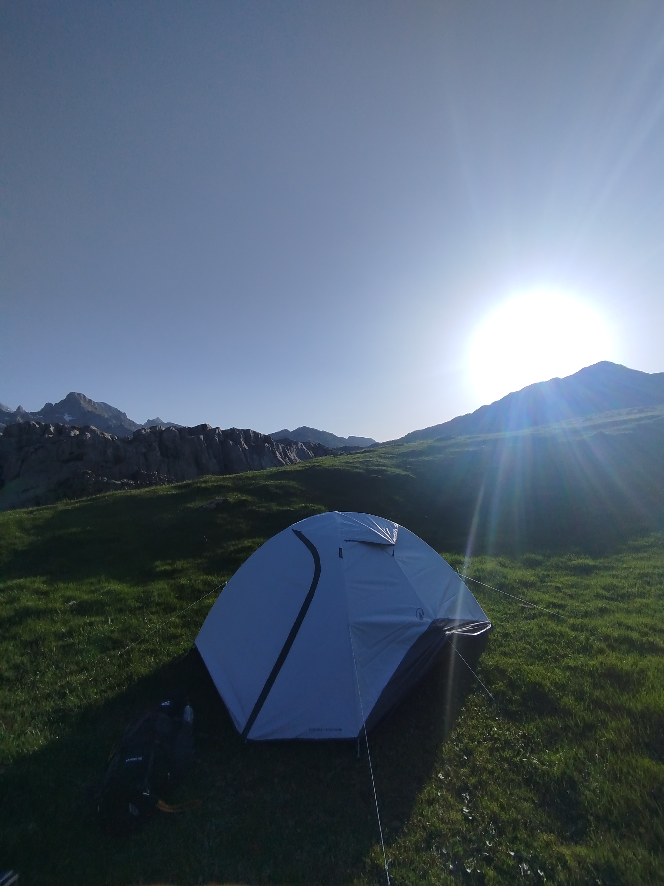
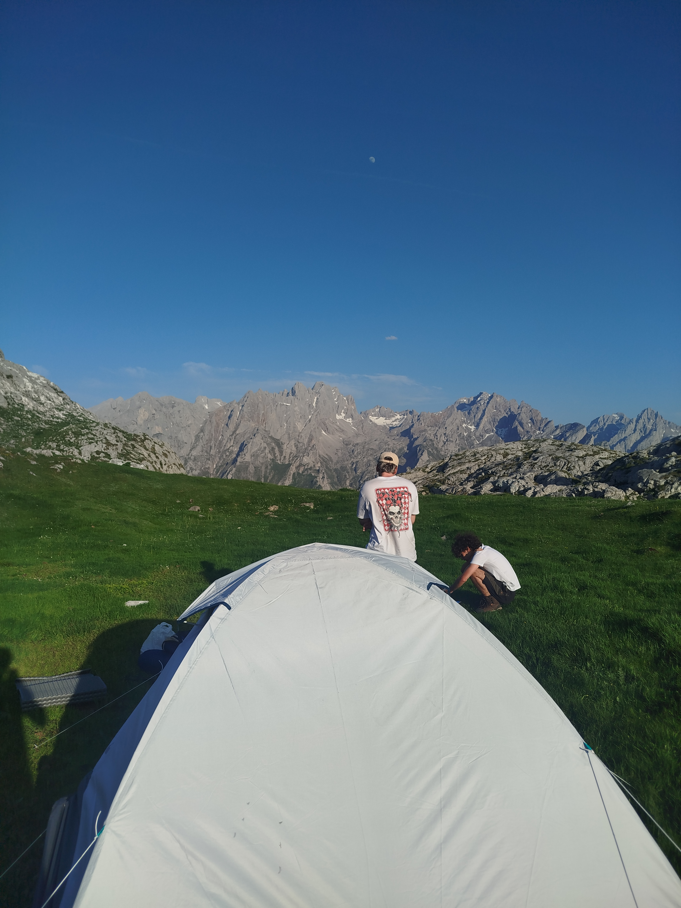
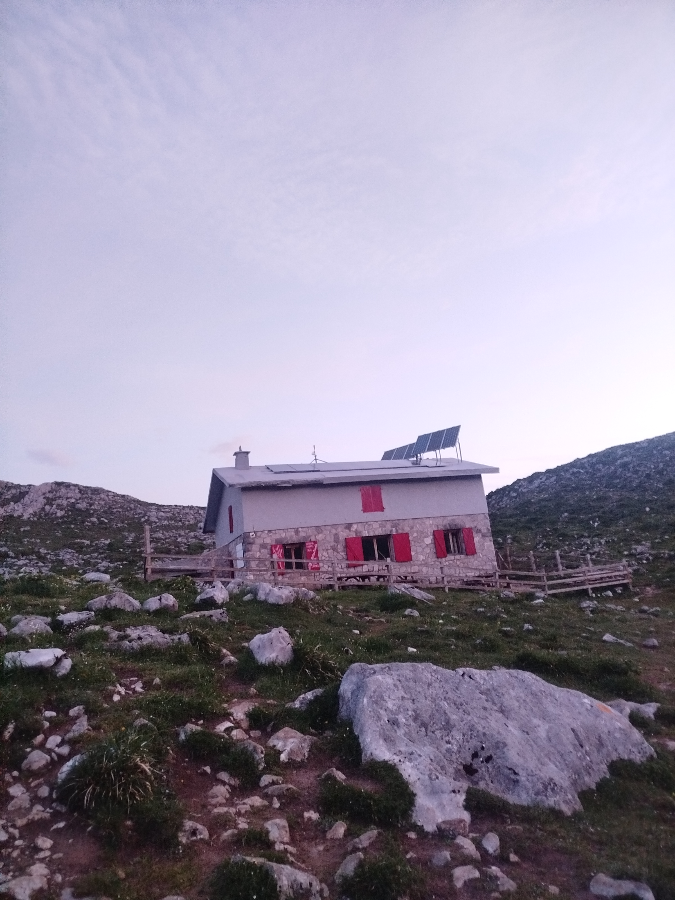

Vega de Ario

Una meseta en las nubes
La Vega de Ario es una de las majadas más célebres y queridas de los Picos de Europa. Situada en el Macizo Occidental (Cornión), a 1.630 metros de altitud, esta altiplanicie caliza sorprende al caminante con una amplitud y una luminosidad que contrastan con los angostos caminos de acceso. El refugio de Vega de Ario, gestionado por el PRIA, es el corazón de este rincón y punto de partida para algunas de las mejores rutas del macizo.
Las vistas más espectaculares del macizo
Desde Ario se disfruta de una de las panorámicas más impresionantes de todo el Parque Nacional: el Macizo Central (Urrieles) se despliega en todo su esplendor al este, con el Naranjo de Bulnes (Picu Urriellu) asomando imponente entre las crestas. Hacia el norte, en los días claros, el mar Cantábrico aparece brillando en el horizonte, creando esa sensación única de estar entre montaña y océano al mismo tiempo.
La ruta desde los Lagos de Covadonga
El acceso más clásico parte desde el Lago Ercina, siguiendo el sendero que asciende por el collado de Belbín. Son aproximadamente 10 km de ida con unos 700 m de desnivel acumulado. La ruta, bien señalizada, recorre paisajes de alta montaña kárstica, con lapiaces, dolinas y una flora adaptada a la dureza del entorno. Se estima entre 3 y 4 horas de subida. Es también la base para ascender cumbres como el Jultayu o el Cuvicente.






